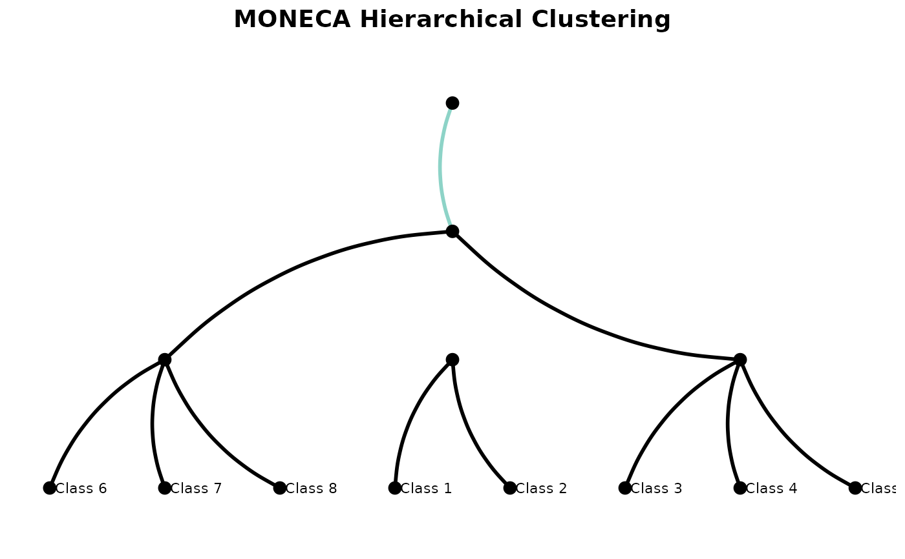
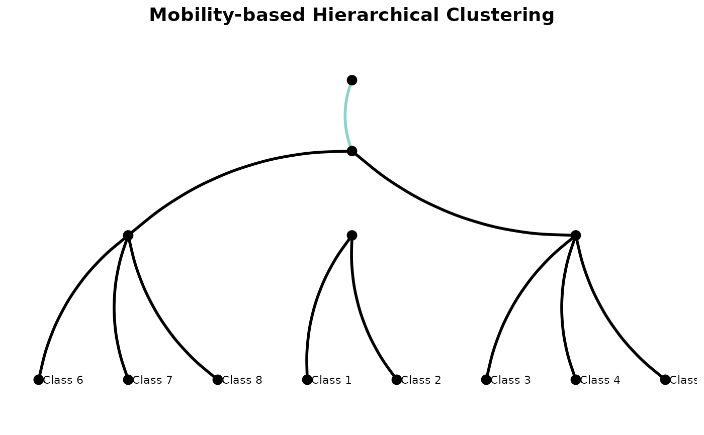
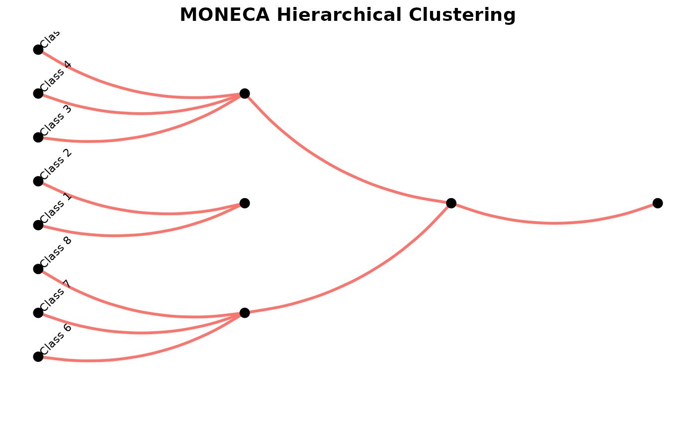
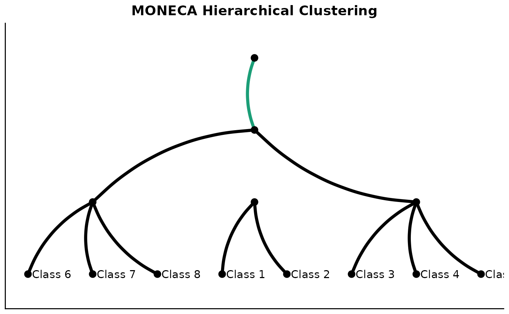

Creates a dendrogram-like visualization of the hierarchical clustering results from moneca analysis. This function shows how categories are progressively aggregated across segmentation levels, making the hierarchical structure clear.
Usage
plot_moneca_dendrogram(
segments,
height_method = "uniform",
color_segments = TRUE,
show_labels = TRUE,
label_size = 3,
branch_width = 1,
title = "MONECA Hierarchical Clustering",
subtitle = NULL,
color_palette = "Set3",
theme_style = "minimal",
vertical = TRUE
)Arguments
- segments
A moneca object returned by
moneca.- height_method
Character string specifying how to calculate dendrogram heights:
"uniform" (default): Equal spacing between levels
"mobility": Height based on mobility reduction between levels
"segments": Height based on number of segments at each level
- color_segments
Logical indicating whether to color branches by final segment membership. Default is TRUE.
- show_labels
Logical indicating whether to show category labels at the bottom. Default is TRUE.
- label_size
Numeric size for labels. Default is 3.
- branch_width
Numeric width for dendrogram branches. Default is 1.
- title
Character string for plot title. Default is "MONECA Hierarchical Clustering".
- subtitle
Character string for plot subtitle. Default is NULL.
- color_palette
Character string specifying the RColorBrewer palette for segment colors. Default is "Set3".
- theme_style
Character string specifying the plot theme. Options are "minimal" (default), "classic", or "void".
- vertical
Logical indicating whether to plot vertically (TRUE, default) or horizontally (FALSE).
Details
This function creates a dendrogram visualization that clearly shows:
How individual categories (leaves) are grouped at each level
The hierarchical relationships between segments
The progressive aggregation from individual categories to larger segments
The dendrogram branches show merging points where categories or segments are combined based on the MONECA algorithm's clique detection. Unlike traditional hierarchical clustering, MONECA can create non-binary trees where multiple categories merge simultaneously.
Visual Features:
Curved branches: Uses smooth curves instead of angular segments for better aesthetics
Horizontal layout: Levels progress horizontally (left to right) with categories arranged vertically
No-Crossing Layout: Categories are automatically ordered using a hierarchical algorithm that completely eliminates line crossings between all levels
The algorithm processes segments from the most aggregated level down, ensuring that at each level, categories are grouped optimally to prevent any crossing lines. This creates the clearest possible visualization of the hierarchical structure.
See also
moneca for the main analysis function,
plot_moneca_ggraph for network visualization,
plot_stair_ggraph for multi-level visualization
Examples
# Generate synthetic data and run MONECA
mobility_data <- generate_mobility_data(n_classes = 8, seed = 123)
seg <- moneca(mobility_data, segment.levels = 3)
#>
|
| | 0%
|
|======= | 10%
|
|============== | 20%
#> 27% ready!
#>
|
|===================== | 30%
|
|============================ | 40%
|
|=================================== | 50%
#> 55% ready!
#>
|
|========================================== | 60%
|
|================================================= | 70%
|
|======================================================== | 80%
#> 82% ready!
#>
|
|=============================================================== | 90%
|
|======================================================================| 100%
#> 100% ready!
#>
#>
|
| | 0%
#> 100% ready!
#>
# Basic dendrogram
plot_moneca_dendrogram(seg)

# Dendrogram with mobility-based heights
plot_moneca_dendrogram(seg, height_method = "mobility",
title = "Mobility-based Hierarchical Clustering")

# Horizontal dendrogram without colors
plot_moneca_dendrogram(seg, vertical = FALSE, color_segments = FALSE)

# Customize appearance
plot_moneca_dendrogram(seg,
color_palette = "Dark2",
branch_width = 1.5,
label_size = 4,
theme_style = "classic")
